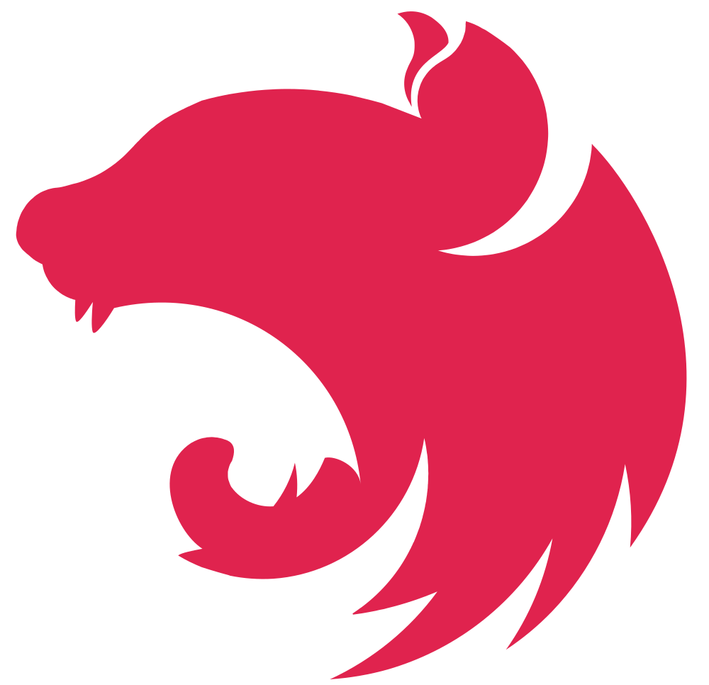
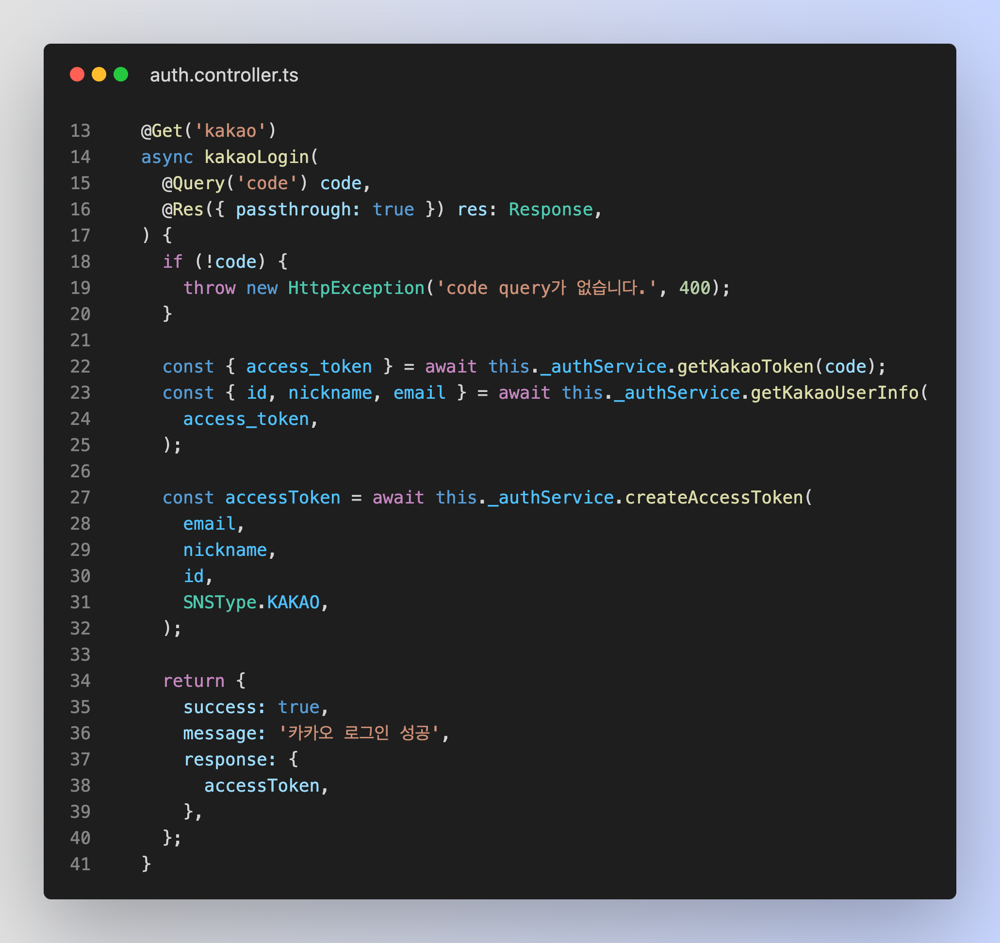
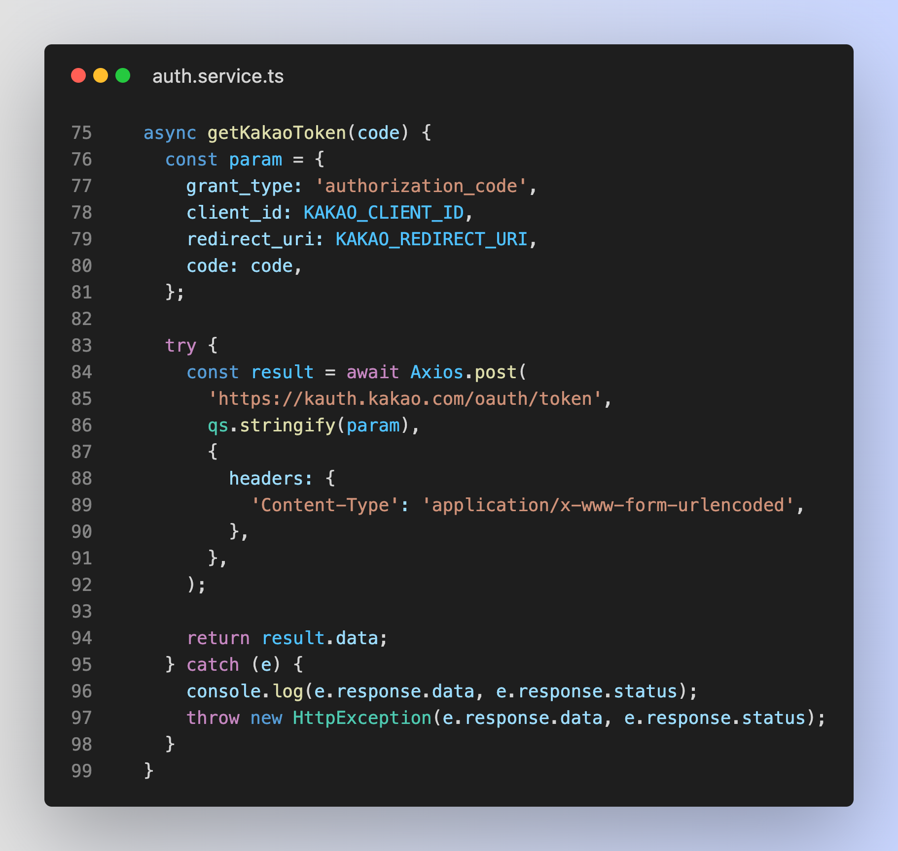
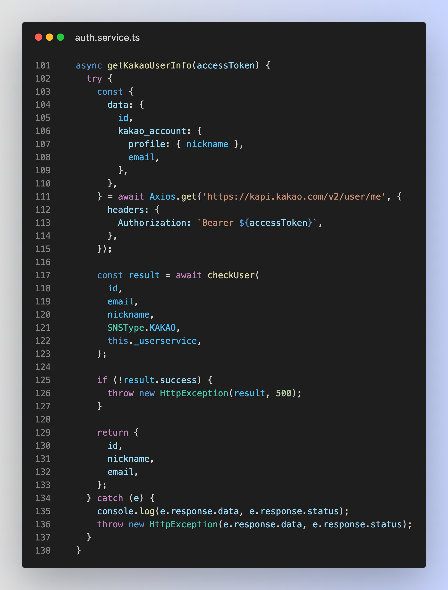
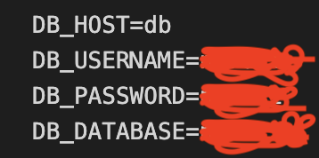

Project information
- 구성원: designer(2명), backend(1명), frontend(1명)
- 프로젝트 기간: 2022.11 ~ 진행중
- Github: https://github.com/jiho5993/wagglewaggle
- API 문서: https://wagglewaggle.readme.io
- 해당 프로젝트는 API 서버, 스케줄러 서버를 사용하여 만들었습니다.
Project Stack
프로젝트에 사용된 기술 스택입니다.

Nest.js
express와는 달리 아키텍처 구조가 통일되어 있어 협업이나 프로젝트의 구조를 한 눈에 쉽게 파악할 수 있고, 각 middleware의 기능이 정해져 있으며, life cycle의 순서가 정해져 있기 때문에 이 프레임워크를 채택했습니다.
Typescript
타입스크립트는 자바스크립트를 기반으로한 정적 타입 문법을 추가한 프로그래밍 언어입니다. 때문에 목적에 맞지 않는 타입이나 변수가 있으면 에러를 감지해서 개발할때 편의성을 얻을 수 있어 사용했습니다.
TypeORM
orm은 객체지향적인 코드로 인해 더 직관적이고 로직에 집중할 수 있도록 도와줍니다. 그로 인해 재사용 및 유지보수의 편리성이 증가해 더 쉽게 프로그래밍할 수 있기 때문에 채택했습니다.
Project Content
프로젝트에 구현한 주요 기능입니다.
# 소셜 로그인 구현
- * Kakao, Naver, Google 플랫폼에서 제공하는 REST API를 이용하여 구현했습니다.
- * 각 플랫폼에서 얻은 유저 정보를 JWT로 만들어 관리하였습니다.
- * 유저가 API를 요청할 때 유효한 유저인지 판별하기 위해 Guard를 사용하여 API를 보호했습니다.
# Pipe를 통한 데이터 유효성 검사
- * 클라이언트의 요청이 왔을 때, 해당 controller에 대한 데이터를 처리했습니다.
- * DTO와 class-validator를 활용하여 타입을 체킹했습니다.
# TypeORM을 활용한 엔티티 관리
- * DB erd 설계 후 엔티티를 생성하여 DB를 관리했습니다.
# AWS S3로 프로필 이미지 관리
# Docker로 테스트용 서버 배포
- * 프론트엔드 개발자 분들이 백엔드 환경을 구축하지 않아도 사용 가능한 환경을 제공했습니다.
# API 문서 작성
Issue
프로젝트를 진행하면서 발생한 이슈입니다.
1. 소셜 로그인
* 문제점 소셜 로그인을 도입하기 위해 passport라는 모듈을 활용해 도입했지만, 실제로는 서버의 응답 데이터가 사라지는 현상이 발생했습니다. * 해결 과정 소셜 로그인이라는 기술 자체가 어떤 흐름을 가지고 있고, 구현에 있어서 무엇이 필요한지 이해해야 도입할 수 있을거라 생각했습니다. passport-kakao가 실제로 돌아가는 로직을 살펴봤더니 REST API를 활용한 로직임을 알 수 있었습니다. * 해결 방법 passport 모듈은 사용하지 않고 REST API를 통해 직접 구현했습니다. 코드 : https://github.com/DCPT-KNP/NerdIT-Backend/blob/main/src/auth/auth.service.ts#L72



2. Docker로 테스트용 서버 배포
* 문제점 서버와 데이터베이스 컨테이너가 연동되지 않아 DB관리를 할 수 없는 현상이 발생했습니다. * 해결 과정 도커의 HOST부분은 localhost가 아니라는 것을 알았습니다. localhost로 설정할 경우 db container 부분을 가리키지 않기 때문에 연동되지 않습니다. * 해결 방법 HOST 부분을 db container를 가리키게 하여 연동했습니다. 코드 : https://github.com/DCPT-KNP/NerdIT-Backend/blob/main/docker-compose.test.yml

느낀 점
프로젝트를 진행하면서 느낀 부분을 적었습니다.
- 1. Nest.js와 Typescript, TypeORM으로 어떤 식으로 개발해야 하는지, 또는 장점을 알 수 있었습니다.
- 2. 개발을 하면서 구현 할 수 없었거나, 좋은 방법이 있지만 그런 자료를 찾을 수 없었던 부분을 협업을 통해 부족했던 지식을 쌓을 수 있었습니다. 백엔드를 혼자하고 다른 분야의 사람들에게 이런 조언을 들을 수 있을까 생각했지만, 조언을 통해 커뮤니케이션 능력이 중요하다고 생각했습니다. (S3나 소셜 로그인)
- 3. Docker를 사용하기 전, 프론트에서 서버를 실행하기 위해 DB나 Node.js의 버전에 맞게 환경을 구축해야했지만, 이번 프로젝트에서는 Docker 사용하여 프론트엔드 개발자 분들이 백엔드 환경을 따로 구축하지 않아도 사용 가능한 환경을 제공했습니다. 간단한 파일 작성으로 쉽게 환경을 제공할 수 있고 pull하기만하면 쉽게 사용할 수 있다는 장점을 알았습니다.